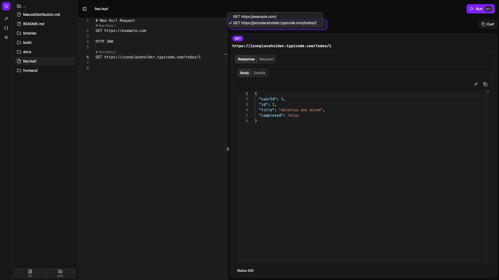

GUI for HURL

Open source.
GPLv3 license, free forever.
HURL Features
Has most of the hurl features, like assertion, variables, multiple requests and responses in a file.
Markdown support.
View and edit Markdown files directly within the application.